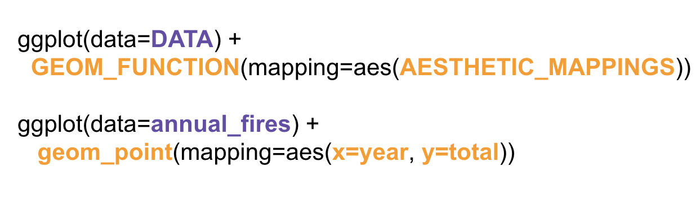

Visualizing data
Data Introduction
Before we begin, let’s bring in the data we’ve been working with.
df <- read_csv("https://www.fema.gov/api/open/v2/DisasterDeclarationsSummaries.csv")
df_new <- df |>
mutate(GEOID=str_c(fipsStateCode, fipsCountyCode))
county_pop <- read_csv("data/county_population.csv")
joined_new <- left_join(df_new, county_pop, by="GEOID") |>
mutate(year=year(incidentBeginDate))Let’s take a look at what were working with. Check out joined_new with the usual function we use:
function starts with an g.
glimpse(joined_new)
glimpse(joined_new)Okay, let’s transform the data like we did before.
Can you count up how many disasters there have been per year? Not total disasters. Individual disasters.
Call the new column “total”.
You only need to add one new line. The function starts with a c and don’t forget to name the column you’re creating. year should be the second argument in the function.
annual_disasters <- joined_new |>
count(incidentType, year, name="total")
annual_disasters
annual_disasters <- joined_new |>
count(incidentType, year, name="total")
annual_disastersAlright, we’ve got a lot of data going back decades.
The benefit of working quickly with data in R is how you can quickly visualize it to spot any trends.
Let’s do that.
But before we do, let’s create another data frame specifically for fires.
Filter incidentType for “Fire”, please.
The function starts with a f and don’t forget ==
annual_fires <- annual_disasters |>
filter(incidentType=="Fire")
annual_fires
annual_fires <- annual_disasters |>
filter(incidentType=="Fire")
annual_firesGrammar of Graphics
The grammar of graphics lets you approach visualizations structurally, letting you combine and swap out graphical elements into figures that display data meaningfully.
It takes two lines of code.
This is what the code and chart looks like.
Run the code below.
Basically, every of a chart can created using these aesthetic components and mapping them:
Mapping data to aesthetics
Aesthetic
The visual property of a graph
Position, shape, color, etc.
Data
- A column in a data set
Here’s are the core components of the chart above:
| Data | Aesthetic | Graphic/Geometry |
|---|---|---|
| Year | Position (x-axis) | Column |
| Total disasters | Position (y-axis) | Point |
Here’s how the data was mapped in ggplot2 code from the annual_fires data frame:
| Data | aes() | geom |
|---|---|---|
| year | x | geom_col() |
| total | y | geom_col() |
ggplot() template
Here’s the dataframe called annual_fires as a reminder:
Okay, now that you see where all the pieces come from, here’s how ggplot() works.
At its core you need to tell it what data you’re using, what type of visual geometry you want to use, and what variables you want represented from the data.
Important: We have to use + signs between each line, not |>. This is because ggplot() was created before the tidyverse piping method was established.


Grammatical layers
When constructing charts, so far we know about data, aesthetics, and geometries.
Think of these components as layers.

Add them to foundational ggplot() with +
These are all the arguments we can enhance the data viz with.
Change the colors of the viz based on a column. Or the size of the shape.
Or the opacity or the gradient.
Possible aesthetics

We can also swap out the different geometry types.
If you don’t want a bar, you can use a line. Or a point.
You can even use shapefiles.
Possible geoms

THERE ARE SO MANY GEOMS for different visualizations. Here are the official ones.
Try the code from above again but this time use geom_point() and then try it with geom_line()
You can really start to see the power of cycling quickly through different chart styles to see which one is most effective at telling the story you want to tell.
So after you have the very basic elements needed to create a chart, you can build and style it with more layers.
Because the defaults are rarely what you want and effective dataviz comes from small decisions you make along the way.
Additional layers
There are many of other grammatical layers we can use to describe graphs.
We sequentially add layers onto the foundational ggplot() plot to create complex figures.

Scales change the properties of the variable mapping.
Here are a few examples:
| Example layer | What it does |
|---|---|
scale_x_continuous()
|
Make the x-axis continuous |
scale_x_continuous(breaks = 1:5)
|
Manually specify axis ticks |
scale_x_date()
|
Considers x-axis dates |
scale_color_gradient()
|
Use a gradient |
scale_fill_viridis_d()
|
Fill with discrete viridis colors |
Check out the x-axis.
Exercise 2
Now add scale_x_continuous(limits=c(2010, 2022), breaks=2010:2022) to the bottom of the code.
ggplot(data=annual_fires) +
geom_col(aes(x=year, y=total)) +
scale_x_continuous(limits=c(2010, 2022), breaks=2010:2022)
ggplot(data=annual_fires) +
geom_col(aes(x=year, y=total)) +
scale_x_continuous(limits=c(2010, 2022), breaks=2010:2022)gradethis::grade_this_code()function (check_env)
{
if (is_empty_code(check_env[[".user_code"]])) {
return(grade_code_is_empty())
}
check_env[[".__correct"]] <- correct
check_env[[".__incorrect"]] <- incorrect
check_env[[".__action"]] <- action
grade <- with_options(list(gradethis.allow_partial_matching = allow_partial_matching,
gradethis.maybe_code_feedback = TRUE), grade_this({
.message <- code_feedback()
if (is.null(.message)) {
if ("pass" %in% get(".__action")) {
pass(get(".__correct"))
}
}
else {
if ("fail" %in% get(".__action")) {
fail(get(".__incorrect"), hint = FALSE)
}
}
invisible(NULL)
})(check_env))
if (is.null(grade)) {
return(invisible(NULL))
}
class(grade) <- c("gradethis_graded_this_code", class(grade))
grade
}
<bytecode: 0x121dad5a8>
<environment: 0x121d9b300>Do you see the difference at the bottom of the chart compared to the one above it?
It limited the scope of the x-axis so it didn’t go back to the ’50s anymore.
And it specifically labeled the years 2010 through 2022.
Facets
The next possible layer allows for small multiples. It’s really neat.
Facets show subplots for different subsets of data.
| Example layer | What it does |
|---|---|
facet_wrap(vars(incidentType))
|
Plot for each disaster type |
facet_wrap(vars(incidentType, year))
|
Plot for each disaster type/year |
facet_wrap(…, ncol = 1)
|
Put all facets in one column |
facet_wrap(…, nrow = 1)
|
Put all facets in one row |
The table above shows all the different ways you can use facets– you can break it out by one extra variable or even two.
We’ll use the annual disasters this time so we have more than just the fires.
But we’ll filter it to hurricanes and fires and floods.
And we can combine it with pipes before we use ggplot() it.
Add the facet_wrap() line on the variable incidentType (like the first example in the table above).
The function starts with a f and don’t forget ==
annual_disasters |>
filter(incidentType %in% c("Hurricane", "Fire", "Flood")) |>
ggplot() +
geom_col(mapping=aes(x= year, y= total)) +
scale_x_continuous(limits=c(2010, 2022), breaks=2010:2022) +
facet_wrap(vars(incidentType))
annual_disasters |>
filter(incidentType %in% c("Hurricane", "Fire", "Flood")) |>
ggplot() +
geom_col(mapping=aes(x= year, y= total)) +
scale_x_continuous(limits=c(2010, 2022), breaks=2010:2022) +
facet_wrap(vars(incidentType))Alright, looks like the x-axis labels are getting a little crowded.
We can’t even read it!
Try again!
Now, try it with ncol=1 as an additional argument in facet_wrap()
function starts with an f. Additional arguments in a function are separated with a comma.
annual_disasters |>
filter(incidentType %in% c("Hurricane", "Fire", "Flood")) |>
ggplot() +
geom_col(mapping=aes(x= year, y= total)) +
scale_x_continuous(limits=c(2010, 2022), breaks=2010:2022) +
facet_wrap(vars(incidentType), ncol=1)
annual_disasters |>
filter(incidentType %in% c("Hurricane", "Fire", "Flood")) |>
ggplot() +
geom_col(mapping=aes(x= year, y= total)) +
scale_x_continuous(limits=c(2010, 2022), breaks=2010:2022) +
facet_wrap(vars(incidentType), ncol=1)grade_this_code()
grade_this_code()Labels
Now we can add more customization to the chart.
To make it really shine!
| Example layer | What it does |
|---|---|
labs(title = “Neat title”)
|
Title |
labs(caption = “Something”)
|
Caption |
labs(y = “Something”)
|
y-axis |
labs(color = “Type”)
|
Title of size legend |
- Title should be “Disaster declarations since 2010”
- Label for the x-axis should be blank (aka ““) because the years are obvious
- Label for the y-axis should be “Total”
- Caption should be “Data: FEMA”
Add those labels below:
You only need to call labs() once. Within parentheses, just separate the arguments with commas. You don’t use the plus signs.
annual_disasters |>
filter(incidentType %in% c("Hurricane", "Fire", "Flood")) |>
ggplot() +
geom_col(mapping=aes(x= year, y= total)) +
scale_x_continuous(limits=c(2010, 2022), breaks=2010:2022) +
facet_wrap(vars(incidentType), ncol=1) +
labs(
title = "Disaster declarations since 2010",
x = "",
y = "Total",
caption= "Data: FEMA"
)
annual_disasters |>
filter(incidentType %in% c("Hurricane", "Fire", "Flood")) |>
ggplot() +
geom_col(mapping=aes(x= year, y= total)) +
scale_x_continuous(limits=c(2010, 2022), breaks=2010:2022) +
facet_wrap(vars(incidentType), ncol=1) +
labs(
title = "Disaster declarations since 2010",
x = "",
y = "Total",
caption= "Data: FEMA"
)Themes
Change the appearance of anything in the plot.
While you can customize every font, color, gradient, etc, you can set these styles up ahead of time or use the ones others have created.
There are many built-in themes.
| Example layer | What it does |
|---|---|
theme_grey()
|
Default grey background |
theme_bw()
|
Black and white |
theme_dark()
|
Dark |
theme_minimal()
|
Minimal |
Try out the different themes listed above in the code below.
More themes
There are a collections of pre-built themes online, like the ggthemes package.
Organizations often make their own custom themes, like the BBC.

Theme adjustments
Make theme adjustments with theme()
There are a billion options here!
Add this chunk of code in the exercise below it:
theme_bw() +
theme(plot.title = element_text(face = "bold"),
panel.grid = element_blank(),
axis.title.y = element_text(face = "italic"))Exercise 5
annual_disasters |>
filter(incidentType %in% c("Hurricane", "Fire", "Flood")) |>
ggplot() +
geom_col(mapping=aes(x= year, y= total)) +
scale_x_continuous(limits=c(2010, 2022), breaks=2010:2022) +
facet_wrap(vars(incidentType), ncol=1) +
labs(
title = "Disaster declarations since 2010",
x = "",
y = "Total",
caption= "Data: FEMA"
) +
theme_bw() +
theme(plot.title = element_text(face = "bold"),
panel.grid = element_blank(),
axis.title.y = element_text(face = "italic"))
annual_disasters |>
filter(incidentType %in% c("Hurricane", "Fire", "Flood")) |>
ggplot() +
geom_col(mapping=aes(x= year, y= total)) +
scale_x_continuous(limits=c(2010, 2022), breaks=2010:2022) +
facet_wrap(vars(incidentType), ncol=1) +
labs(
title = "Disaster declarations since 2010",
x = "",
y = "Total",
caption= "Data: FEMA"
) +
theme_bw() +
theme(plot.title = element_text(face = "bold"),
panel.grid = element_blank(),
axis.title.y = element_text(face = "italic"))These were just a few examples of layers.

See the ggplot2 documentation for complete examples of everything you can do